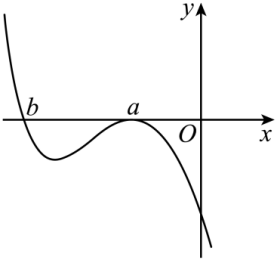
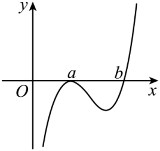

示例学校高二周测（7） Q7
题目
7．设a≠0，若a为函数f(x)=a(x-a)^2(x-b)的极大值点，则（ ）
A．a<b B．a>b C．ab<a^2 D．ab>a^2
答案与解析
7．D【详解】若a=b，则f(x)=a(x-a)^3为无极值点，不符合题意，∴f(x)有a和b两个不同零点，且在x=a左右附近是不变号，在x=b左右附近是变号的.依题意，a为函数f(x)=a(x-a)^2(x-b)的极大值点，∴在x=a左右附近都是小于零的.
当a<0时，由x>b，f(x)≤0，画出f(x)的图象如图左所示. 由图可知b<a，a<0，故ab>a^2. 当a>0时，由x>b时，f(x)>0，画出f(x)的图象如图右所示. 由图可知b>a，a>0，故ab>a^2. 综上所述，ab>a^2成立.


结构化摘要
{
"question_id": "szzx2024g2week7_q007",
"answer": "D",
"assets": [
{
"id": "img001",
"type": "image",
"rel_id": "rId8",
"source": "word/media/image2.png",
"path": "assets/szzx2024g2week7_q007_image_01.png"
},
{
"id": "img002",
"type": "image",
"rel_id": "rId9",
"source": "word/media/image3.png",
"path": "assets/szzx2024g2week7_q007_image_02.png"
}
],
"ole_objects": [],
"extraction": {
"source_paragraph_range": [
20,
21
],
"solution_paragraph_range": [
4,
6
],
"formula_count": 32,
"image_count": 2,
"ole_count": 0,
"quality_flags": [
"contains_images",
"contains_omml"
]
}
}